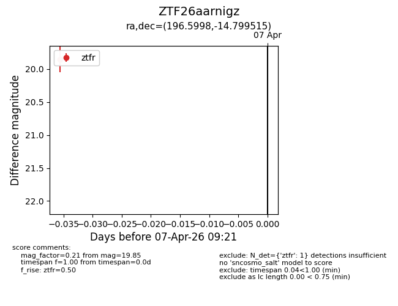
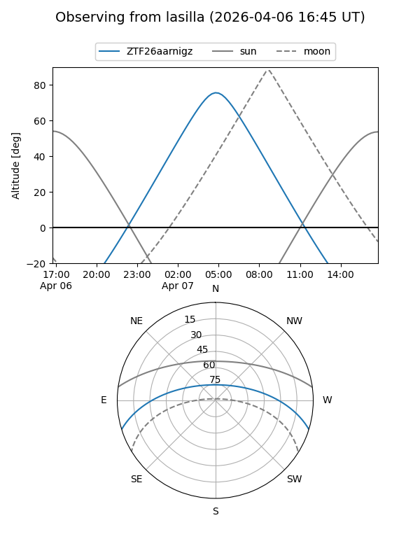
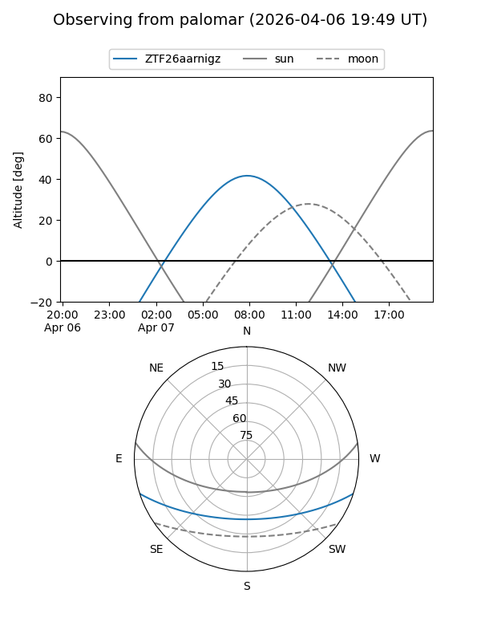
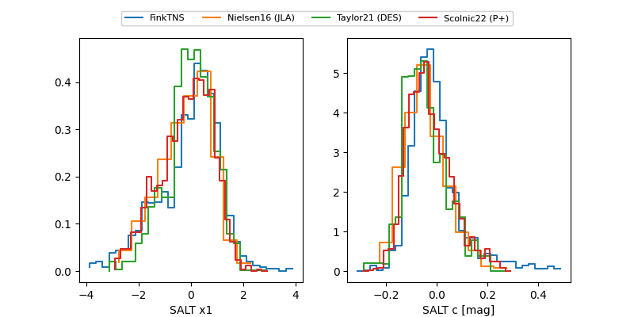

ZTF26aarnigz
Target ZTF26aarnigz at 2026-04-07 09:26
Aliases and brokers:
FINK: link
Lasair: link
ALeRCE: link
alt names
ZTF26aarnigz (ztf,fink_ztf)
Coordinates:
equatorial (ra, dec) = 196.5998,-14.79951
equatorial (HMS+DMS) = 13:06:23.95,-14:47:58.25
galactic (l, b) = (308.3316,+47.91531)
Flags:
Photometry:
last ztfr=19.85
1 ztfr detections
Lightcurve

Visibility


Additional plots
